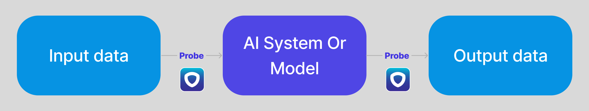

Introduction
Welcome to the Suzan AI Shield API!
Suzan AI is the 1st European platform for semi-automated AI governance and compliance.
You can use our API to access Suzan AI API endpoints and unlock your projects from the legal department.
We thank Slate for their amazing open source documentation tool.
Getting Started
Concepts
You can use our api when you want to access, probe, and validate your ai systems.
Each legal requirement will necessitate a dedicated probe at some point in your system.
You will be able to store the metrics needed (biais,co2,...) with one function call.

Quick example
from SuzanAI import shield
project_id = "suz_project_key_*****"
secret = "suz_prodkey_*****"
metric_id = "suz_metric_key_****"
shield.authorize(secret)
probe = shield.load(project_id,mode="production")
test_input_pii = "my name is Suzan"
if custom_pii_dector(test_input_pii):
probe.add_one(metric_id) # return 1
# Alternative :
# value = probe.get_value(metric_id)
# probe.set_value(value + 1)
I want to implement a large language model to generate emails to planify my meetings. But before deploying to production, my legal team need me to log the number of queries that contain a Personal Identifiable Information (PII).

Authentication
To authorize, use this code:
from SuzanAI import shield
secret = "suz_prodkey_*****"
shield.authorize(secret)
Make sure to replace
suz_prodkey_*****with your API key.
Suzan AI uses API keys to allow access to the API. You can register a new Suzan AI API key at our developer portal.
You will be able to generate test keys "suz_testkey_..." and production keys "suz_prodkey_..."
On premise
On premise instance
from SuzanAI import shield
secret = "suz_prodkey_..."
custom_url="suzanservice.yourcompany.com"
shield.authorize(secret,url=custom_url)
On premise instances are useful if it is part of your requirements. We do not offer on premise instance by default, you need to contact us to get access to this ressource. If you have an on premise instance you can change the url in the authorize parameter.
Multi tenant
On a specific tenant
from SuzanAI import shield
secret = "suz_prodkey_..."
tenant_id="suz_tenant_..."
custom_url="suzanservice.yourcompany.com"
shield.authorize(secret,tenant=tenant_id,url=custom_url)
For very specific use-cases, you will need to separate your suzan services within your entities.
As a developer, you will be assigned a specific tenant to push your metrics, ensuring that there is no contamination from other entities or services. This dedicated tenant will allow you to have complete control over your metrics and ensure accurate measurement of your application's performance.
I the case of a multi-tenant configuration you must specify your tenant id.
Shield
Get all projects
from SuzanAI import shield
secret = "suz_prodkey_*****"
shield.authorize(secret)
projects = shield.get_projects()
The above command returns JSON structured like this:
[
{
"id": 1,
"name": "notOnlyAWrapper",
"mode": "dev",
"status": "lacking data",
"details":[...]
},
{
"id": 2,
"name": "magic",
"mode": "prod",
"status": "good",
"details":[...]
}
]
Projects are either created by the legal department or you can create them and then push the metrics.
To get started you can list all the projects.
Get and filter projects
Projects have different status to specify if the project has been checked or not.
Projects have different mode to specify if the logged metrics are test purposes or in production.
from SuzanAI import shield
secret = "suz_prodkey_*****"
shield.authorize(secret)
projects = shield.get_projects(mode="dev")
The above command returns JSON structured like this:
[
{
"id": 1,
"name": "notOnlyAWrapper",
"mode": "dev",
"status": "lacking data"
}
]
from SuzanAI import shield
secret = "suz_prodkey_*****"
shield.authorize(secret)
projects = shield.get_projects(status="good")
The above command returns JSON structured like this:
[
{
"id": 2,
"name": "magic",
"mode": "prod",
"status": "good"
}
]
Metrics Shield
from SuzanAI import shield
project_id = "suz_project_key_*****"
secret = "suz_prodkey_*****"
metric_id = "suz_metric_key_****"
shield.authorize(secret)
probe = shield.load(project_id,mode="production")
# list metrics
probe.get_metrics(project_id)
# get value
probe.get_value(metric_id)
# or
probe.get_value(metric_id,history=10)
#set value
probe.set_value(metric_id,value)
Get metrics
Given a project id, you can get all the metrics associated.
Get value
Given a metric id, you can recover the last given value or a sample of the last values given by history, by default = 1.
Set value
Given a metric id, you can set it value by using the set_value function.
Datasets Shield
Logging dataset can be tricky because of their size and their ever changing nature. In some case, you will need to store the full dataset. This can be done using the "store=True" attribute. Often, only the hash of the dataset will be need and you can select store=False in the function.
from SuzanAI import shield
project_id = "suz_project_key_*****"
secret = "suz_prodkey_*****"
metric_id = "suz_metric_key_****"
shield.authorize(secret)
probe = shield.load(project_id,mode="production")
probe.log_dataset(name,data,store=True) # if store = False, only store the hash
Models Shield
from SuzanAI import shield
project_id = "suz_project_key_*****"
secret = "suz_prodkey_*****"
metric_id = "suz_metric_key_****"
shield.authorize(secret)
probe = shield.load(project_id,mode="production")
probe.log_model(model=model)
When models and model weights are needed, you can push them using the log_model method.
We are compatible with most of the main machine learning / deep learning frameworks: Pytorch, TensorFlow, scikit-learn,...